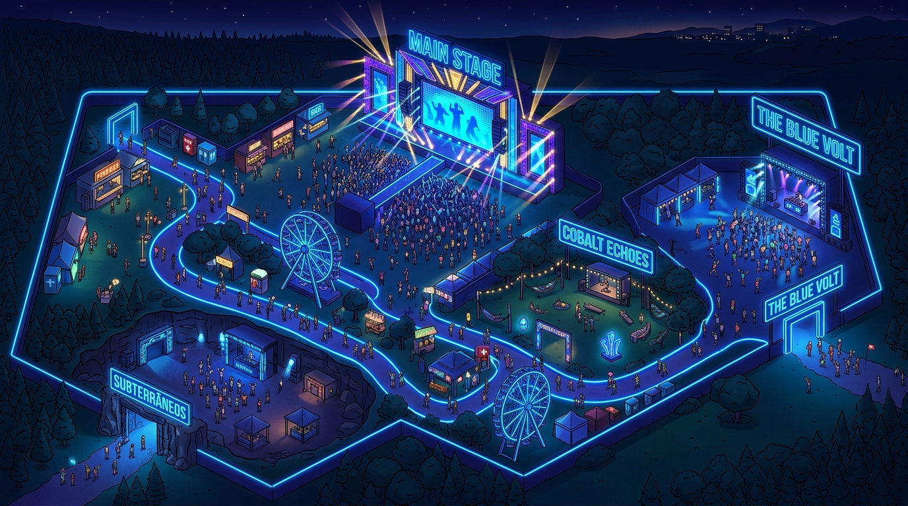

Localização e Estrutura
Endereço do Evento
Galpão Central — Distrito Industrial
Av. das Indústrias, nº 1400, Bloco B
São Paulo — SP | CEP 04500-000
Como Chegar
- Metrô/Trem: Estação Estação Central (Linha Azul) com traslado de ônibus gratuito a cada 15 min.
- Carro: Estacionamento oficial terceirizado no local com vaga garantida via reserva.
- Aplicativos: Ponto exclusivo de embarque e desembarque na entrada principal do evento.

Mapa Ilustrativo do Local do Evento
Regras do Festival
O que PODE levar
- Garrafa de água de plástico transparente (sem tampa)
- Mochila ou bolsa pequena (sujeita a revista)
- Protetor solar e capa de chuva
- Câmera fotográfica não profissional (sem lente removível)
- Documento de identidade original com foto
O que NÃO PODE levar
- Garrafas, copos ou recipientes de vidro
- Bebidas alcoólicas ou alimentos externos para comercialização
- Objetos cortantes, perfurantes ou guarda-chuvas com ponta
- Equipamentos de filmagem e áudio profissionais (drones, bastões de selfie)
- Substâncias ilícitas ou fogos de artifício